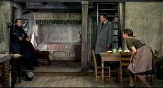

| Torn Curtain/C,C- |
| Universal/1966/128/ANA 1.85 |
Mood plays such an important part or reaction to a movie. Many moons
ago I recall seeing Torn Curtain and thinking it was pretty good. What must I have been
drinking? How could this cold war espionage thriller go so wrong? How could Hitchcock make such an
essentially boring film? Even some of the camera framing is so poorly done it's simply annoying.
There are some minor treats buried in the slow and ponderous plotting. Gromek, unhappily a minor
character, is a crafted with an off-center sense of humor that yields ominous pleasure, but think
about how poorly written the character of Professor Lindt is done. Well, there's nothing left to do
but scratch your head and let the dandruff fall where it may.
The preposterous plot revolves around an American physicist who determines to
travel to East Germany on a personal espionage mission. When Michael Armstrong's research project
is closed down by the American government because it fails to yield the promised results, Armstrong
believes a Eastern European professor has the missing key to unlock his project. He takes a
circuitous route to pick the mind of renowned physicist Lindt.
 |
| Get off the damn phone Gromek! ©Universal |
Director Hitchcock turns to contemporary stars Paul Newman and
Julie Andrews to add luster to Torn Curtain. Unfortunately, there's no screen chemistry
between the stars. The script is far too big an obstacle for the actors to overcome. The results
are lamentable film, more so considering it came from Hitchcock. The best character in the film
even gets killed off too early in a fight with Armstrong. Maybe Gromek should have dispatched
Armstrong. It would have been a better film. The failure of Torn Curtain must lie at the
feet of Hitchcock. The timing is all wrong. The pacing is miserable. Hitchcock is entitled to some
wrong moves with all the fine “wrong man” movies he gave us. Torn Curtain stands out and
smells.
It looks like the telecine guys must have disliked Torn Curtain
more than I did. The transfer is shockingly soft. I think the soft scenes outnumber the sharp ones.
Maybe Hitchcock was employing some kindly filtering on his close-ups of Julie Andrews, but the
delivery of this DVD baffles me, especially in light of the outstanding quality of all the other
Universal Hitchcock releases. Color is fine. The street profile as an introduction to Copenhagen is
fully saturated. The color on supporting actress's Lila Kedrova's scarf are an explosion of color
amidst the dull backgrounds of Eastern Europe. Dolby Digital 2 channel mono is serviceable.
The background of Torn Curtain is well outlined in a generic documentary,
utilizing stills from the shoot. Difficulties of the production are outlined. The problems with
star Newman are touched upon. This is the film during which composer Bernard Hermann and Hitchcock
fell out with each and Hermann did not complete the score.
Mother Night/A-/A-

The eccentric style of Nick Nolte is perfect for the angst ridden Howard W. Campbell, Jr., a hero or a villain.

 Have you visited Home Theater
Talk lately? One of the friendliest places on the Net for Home Theater and DVD discussion, you
can get help for installation problems or simply share your opinions with other Vidiots.
Have you visited Home Theater
Talk lately? One of the friendliest places on the Net for Home Theater and DVD discussion, you
can get help for installation problems or simply share your opinions with other Vidiots.
 Kinoeye Archive
Kinoeye Archive
This is a resource of all content-rich
materials on the web relating to Central and East European cinema. The ultimate aim of the Kinoeye
Archive is to provide a near-as-damn-it definitive index of intelligent and thoughtful
English-language analysis of Central and Eastern European cinema on the web.

The DVD Forum is an international association of hardware
manufacturers, software firms and other users of Digital Versatile Discs (the "DVD
Format"), created for the purpose of exchanging and disseminating ideas and information about
the DVD Format and its technical capabilities, improvements and innovations.

News, information, features about current films in theaters and in the
pipeline. Easy to use interface.

Selections from the Feature Archive
include articles on Akira Kurosawa, Frank
Darabont, Blonde Bimbos, Hollywood Street Gangs, or Vietnam: The
Hollywood Pariah, and many more....
Richard Widmark

Widmark laid claim to some of the best twisted film sensibilities ever recorded on celluloid. Find
out more about his career with a profile and poster images